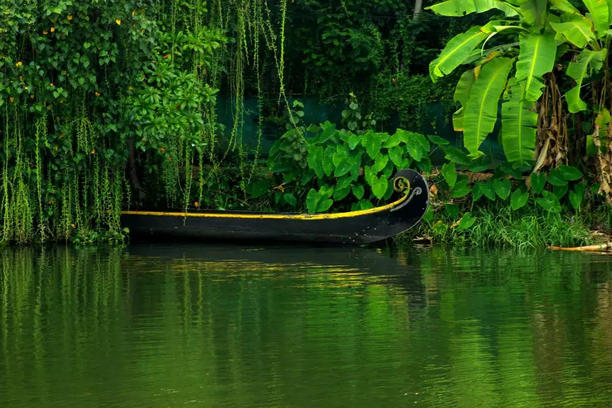
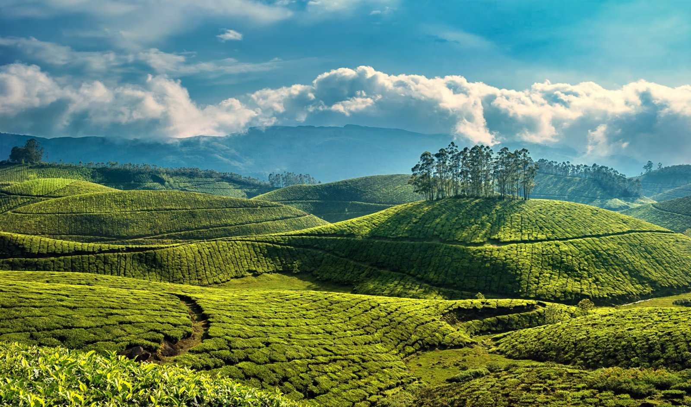

Backwater landscapes
See how canals, lakes and low-lying fields connect the wider region.

KERALA FIELD NOTES · 03 / 06
Let the waterways lead.
CANALS, HOUSEBOATS & BACKWATERSALAPPUZHA
Palm-lined canals, traditional houseboats and everyday life woven around the backwaters.
Alleppey brings together canals, lagoons, rice-growing landscapes and a town facing the Arabian Sea. Thatched-roof houseboats share the wider waterways with smaller local boats. Along the banks, homes and coconut palms create an ever-changing waterside scene.

THE STORIES BENEATH THE SCENERY
Alappuzha developed as a port and trading centre under the Travancore kingdom in the late eighteenth century. Its canals helped move goods, and the town became associated with coir production. The large kettuvallam boats once used to carry cargo helped inspire the houseboats now associated with Kerala’s backwaters.
More background on Alleppey →LOOK A LITTLE CLOSER
See how canals, lakes and low-lying fields connect the wider region.
Learn about the kettuvallam tradition and the relationship between boatbuilding and trade.
Spend time along the Arabian Sea shore and see the remains of the historic pier from the beach.
A FEW FRAMES FROM ALLEPPEY
BEFORE YOU GO
November to February is often comfortable. Monsoon weather can affect boat operations and visibility.
Discuss boat routes and operator standards with your guide. Ask before photographing residents along the canals.
CURIOUS ABOUT ALLEPPEY?
Ask your local guide about the places that interest you.
Contact your guide →THERE’S MORE TO DISCOVER

Chinese fishing nets, old trading streets and a waterfront shaped by centuries of exchange.
Discover Kochi
A lakeside landscape of coconut palms, village waterways and birdlife around Vembanad.
Discover Kumarakom
Tea-covered hills, winding roads and cool mountain landscapes in the Western Ghats.
Discover Munnar